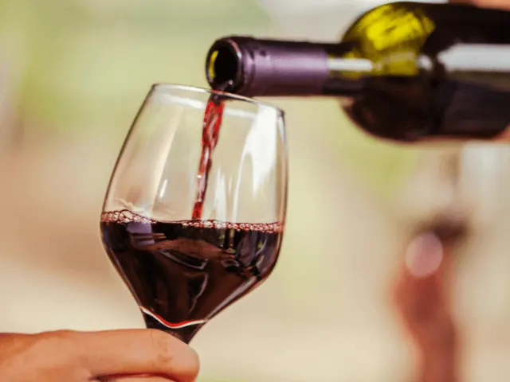
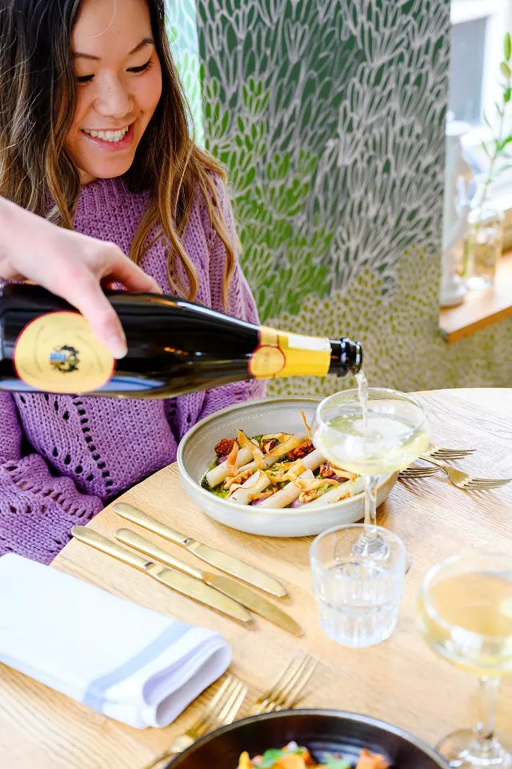
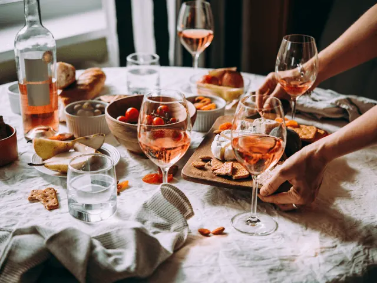
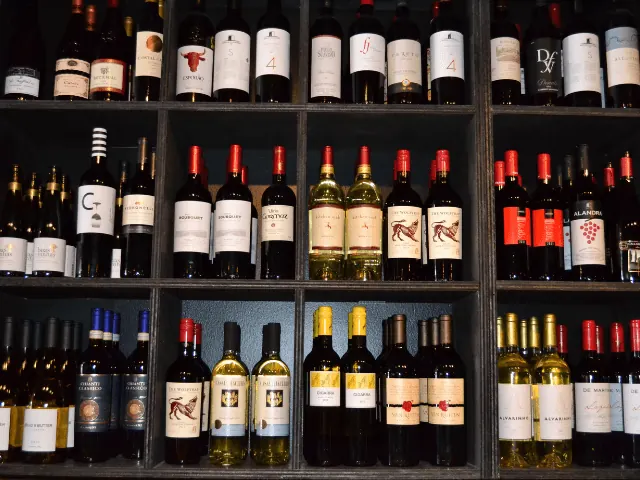

Droom je van een high wine in Nijmegen? Dit zijn de 5 mooiste locaties
Gepubliceerd op 4 februari 2023, bijgewerkt op 20 oktober 2023
Onderdeel van de gids Restaurants in Nijmegen

Tegenwoordig is een High Wine helemaal hip. De meeste mensen weten daarom ook direct waar we het over hebben als we de term ‘High Wine laten vallen. Voor degene die nog niet bekend zijn met dit begrip leggen we het graag uit. Een High Wine is simpel gezegd de alcoholische versie van de welbekende High Tea. De thee wordt in dit geval vervangen door wijn. En de zoete versnaperingen worden vervangen met hartige snacks. Klinkt? In dit artikel vind je de 5 mooiste locaties voor een high wine in Nijmegen!
Overzicht High Wine locaties in Nijmegen
De 5 beste locaties voor een high wine in Nijmegen
Wanneer je kiest voor een High Wine dan krijg je in de meeste gevallen tijdens elke ronde heerlijke snacks een ander wijntje aan tafel. Je ontvangt daarbij informatie over de wijn en ze leggen je uit waarom de wijn zo goed samengaat met de snacks op tafel. Hierdoor geniet je niet enkel van de hapjes en wijntjes, maar leer je ook wat bij tijdens je High Wine. Wil je volop genieten van een heerlijke High Wine? Dan ben je in Nijmegen aan het juiste adres. Wij geven je graag een indruk van de 5 leukste locaties in Nijmegen.
1 – Nostra Nijmegen
Bij Nostra Lunch Winebar Nijmegen kun je terecht voor de leukste High Wines, samen met een leuk gezelschap. Op deze bijzondere locatie maken ze alleen maar gebruik van pure en verse ingrediënten. Hierdoor biedt de Lunch Winebar een heerlijke en gevarieerde lunchkaart aan voor de gasten. Bij Nostra ben je ook aan het juiste adres als je wilt genieten van een heerlijke High Wine in Nijmegen. Bij deze Winebar beschikken ze namelijk over een ruime collectie wijnen die vrijwel allemaal per glas worden geschonken.
Welke drankjes worden er geserveerd?
De Winebar schenkt als een witte wijn onder andere de Italiaanse Verdicchio, de Californische Chardonnays en Portugese of Franse Esporão. De rosé die geschonken wordt bij Nostra is een heerlijke Coteaux d’Aix en Provence “Chapelle du Seuil”. Tijdens de speciale momenten kun je ook genieten van rosé uit een fles Chablis, Sancerre of Riesling.
Bubbels en rode wijnen
De rode wijnen die geschonken worden bij Nosta lopen uiteen van Spaanse Maximo Tempranillo tot een huiswijn naar een Italiaanse Valpolicella Ripasso of eenZuid-Afrikaanse Pinot Noir. En wat is een High Wine zonder bubbles? Bij Nostra geniet je tijdens je High Wine ook van de lekkerste bubbels. De winebar beschikt over heerlijke Ellnes champagne brut of over de lekkerste prosecco’s.
Van welke hapjes kun je hier genieten?
Tijdens de High Wine geniet je naast wijn ook van de lekkerste hapjes tijdens het drinken van de wijntjes. Geniet van een heerlijke Vitello tonnato, een schaal met drie verschillende bruschetta’s en een etagére met warme en koude hapjes. Naast de lekkere hapjes mag je twee glazen wijn per persoon kiezen van de kaart inclusief tafelwater. Nostra Lunch & Winebar is een echte aanrader voor de liefhebbers van een High Wine. De gasten die je voor zijn gegaan hebben Nostra een beoordeling gegeven van maar liefst 4.6 van de 5 sterren!

2 – Ultimo restaurant & wijnbar
Ultimo restaurant & wijnbar is een echte aanrader wanneer je wil genieten van een High Wine. Eigenaar en chef-kok Pepijn Hoebink verwelkomt je graag in zijn restaurant om te genieten van de lekkerste wijntjes en hapjes. De eigenaar heeft zelf de wereld rondgereisd op zoek naar inspiratie voor zijn restaurant & wijnbar. Het resultaat van deze rondreis proef je daarom ook direct terug tijdens een bezoek aan het Nijmeegse restaurant. Bij Ultimo kun je genieten van een restaurant en een wijnbar zonder pretenties. Alles draait hierbij om heerlijk eten en om overheerlijke fantastische wijnen.
Wijnkaart met passie en liefde uitgekozen
Wanneer je wilt genieten van een High Wine, dan ben je bij Ultimo restaurant en wijnbar aan het juiste adres. Hier geniet je van de lekkerste glazen wijn. Bij Ultimo Wijnbar schenken ze flink wat wijnglazen in als je dat graag wil. Daarnaast trekken ze regelmatig ook een speciale en bijzondere fles wijn open zodat de gast iets unieks kan proeven. De wijnen die op de wijnkaart staan hebben ook niet zomaar een plek op de wijnkaart gekregen. De wijnen zijn namelijk door de eigenaar met veel passie, liefde en aandacht uitgekozen. Bij elk wijntje wat je ontvangt tijdens je High Tea word je voorzien van het bijzondere verhaal dat de fles met zich meebrengt. Op deze manier weet je precies wat je drinkt en wat het verhaal achter de heerlijke smaak van de wijn is.
Uitstekende beoordeling
Ultimo restaurant & wijnbar is een echte aanrader voor de liefhebbers van een High Wine. De gasten die je voor zijn gegaan hebben Ultimo een beoordeling gegeven van maar liefst 4.7 van de 5 sterren!

3 – Wijnbar Wijn bij Arentz
Wanneer je op zoek bent naar een bijzondere plek voor een High Wine in Nijmegen, dan is Wijnbar Wijn bij Arentz een echte aanrader. De Wijnbar is in 2018 opgericht en heeft als missie om wijn voor iedereen toegankelijk te maken. Bij Wijn bij Arents serveren ze circa 25 wijnen per glas en beschikken ze over een aantal bijzondere wijnen onder de Coravin. Daarnaast beschikt de Wijnbar ook over een grote wijnkaart met meer dan 500 verschillende wijnen per fles.
Het ruime assortiment aan wijnen zorgt ervoor dat je zowel als beginnen en ervaren wijndrinker uit een ruim aanbod kunt kiezen. Vind je het lastig om te kiezen uit de vele wijnen? Dat is geen enkel probleem. Het personeel helpt je graag om de lekkerste wijntjes te kiezen tijdens je High Wine.
Onvergetelijke tijd met lekkere hapjes
Tijdens een High Wine bij Wijn bij Arentz kun je naast de wijntjes ook genieten van heerlijke hapjes. Deze hapjes worden voornamelijk samengesteld door producten van lokale producten en leveranciers. Wedden dat je hier een onvergetelijke tijd hebt?. De wijnbar is namelijk uitgeroepen door Grootspraak tot wijnbar van het jaar 2020. Het vakblad Grootspraak verteld over de wijnbar:
“Wijn bij Arentz in Nijmegen, een wijnbar naar ons hart: De essentie van een goede wijnbar: keuze uit veel verschillende wijnen, voor aantrekkelijke prijzen. De bediening is ter zake kundig, kan over elke wijn een verhaal vertellen, geeft goed advies en is vlot en vriendelijk.”
Beoordeling met meerdere sterren
Met deze mooie prijs in hun achterzak kan het niet anders dan dat je heerlijk kunt genieten van een heerlijke High Wine bij Wijnbar Arentz. De gasten die je voor zijn gegaan hebben Wijn bij Artenz een beoordeling gegeven van maar liefst 4.6 van de 5 sterren!

4 – Wijnbar Lebowski
Een leuke plek voor een High Wine in Nijmegen is Wijnbar Lebowski. Deze wijnbar staat bekend om zijn wijnkeuzes die seizoensgebonden zijn en hun oorsprong kennen in bijzondere landen. Bij de Wijnbar maken ze daarom ook geen gebruik van een standaard huiswijn. Ze kiezen er namelijk voor om zes wisselende open wijnen te serveren aan de gasten. Je kunt hierbij kiezen uit witte wijn, rode wijn, traditionele wijn en new school wijnen.
Hulp bij wijnkeuze
Wanneer je gaat voor een High Wine bij Wijnbar Lebowski, dan helpen de medewerkers je graag bij je wijnkeuze. Bij de wijnbar kun je altijd kiezen voor twee wijnen van het moment. Deze wijnen komen vaak van de wat kleinere wijnhuizen en zijn gemaakt met de wat onbekendere druivensoorten. Dit maakt natuurlijk de wijn een stuk bijzonderder en verrijkt ook je kennis in bepaalde wijnsoorten. Tijdens een High Wine delen de medewerkers ook graag hun kunde met de gasten.
Beoordeling
Wijnbar Lebowski is een echte aanrader voor de liefhebbers van een High Wine. De gasten die je voor zijn gegaan hebben Lebowski een beoordeling gegeven van maar liefst 4.5 van de 5 sterren!
5 – Nolita Nijmegen
De laatste aanrader uit ons rijtje is Nolita in Nijmegen. Bij Nolita in Nijmegen kun je genieten van heerlijke High Wines, waarbij jij en je gezelschap volledig in de watten worden gelegd. Wanneer je kiest voor een High Wine bij Nolita in Nijmegen, dan begin je met een heerlijk feestelijk glaasje bubbels.
Etagère met hartige hapjes
Na het nuttigen van een heerlijk glas bubbels kun je genieten van een glas witte wijn en een glas rosé terwijl je geniet van een etagère die gevuld is met allerlei hartige hapjes. Deze hapjes bestaan uit verschillende hartige buns, nacho’s, soepje, olijven, warme broodjes met verschillende dips. Nolita Nijmegen is een echte aanrader voor de liefhebbers van een High Wine. De gasten die je voor zijn gegaan hebben Nolita een beoordeling gegeven van maar liefst 4.5 van de 5 sterren!

Genieten van een High Wine in Nijmegen
Wil je binnenkort met je vriendinnen of familie genieten van een verrassende High Wine, dan ben je bij deze vijf adresjes aan het juiste adres. Deze leuke wijnbars hebben inmiddels hun naam goed opgebouwd in Nijmegen en omgeving. De vijf benoemde wijnbars staan namelijk goed aangeschreven en hebben een beoordeling van maar liefst 4.5 of meer op 5 sterren. Deze mooie cijfers zijn natuurlijk niet aankomen waaien en deze zijn met passie door de wijnbars verdiend. Hierdoor ben je er als gast ook van verzekerd dat je kunt genieten van een geweldige High Wine wanneer je een bezoek brengt aan één van de bovenstaande wijnbars.